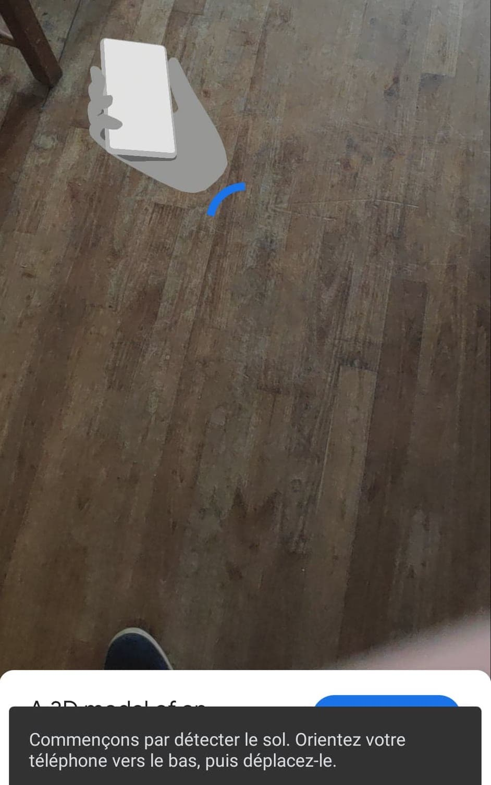
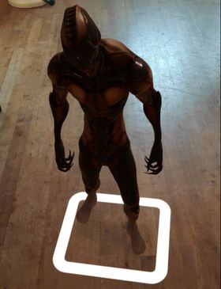

Sur cette page vous pouvez faire pivoter les modèles autour de tous les axes en passant votre doigt sur l'image.
Pour visualiser le modele en Réalité Augmentée,
cliquez sur cette icone:
Votre camera s'allume et la page web vous demande de scanner votre sol.

Pointez votre camera vers le sol et faites faiblement pivoter votre portable sur lui meme, le modèle s'affiche

Vous pouvez déplacer le modèle en laissant votre doigt appuyé dessus.
Vous pouvez faire pivoter le modèle en faisant tourner deux doigt sur le modèle.
Vous pouvez modifier l'échelle du modèle en utilisant deux doigt pour agrandir ou retrecir ce dernier.